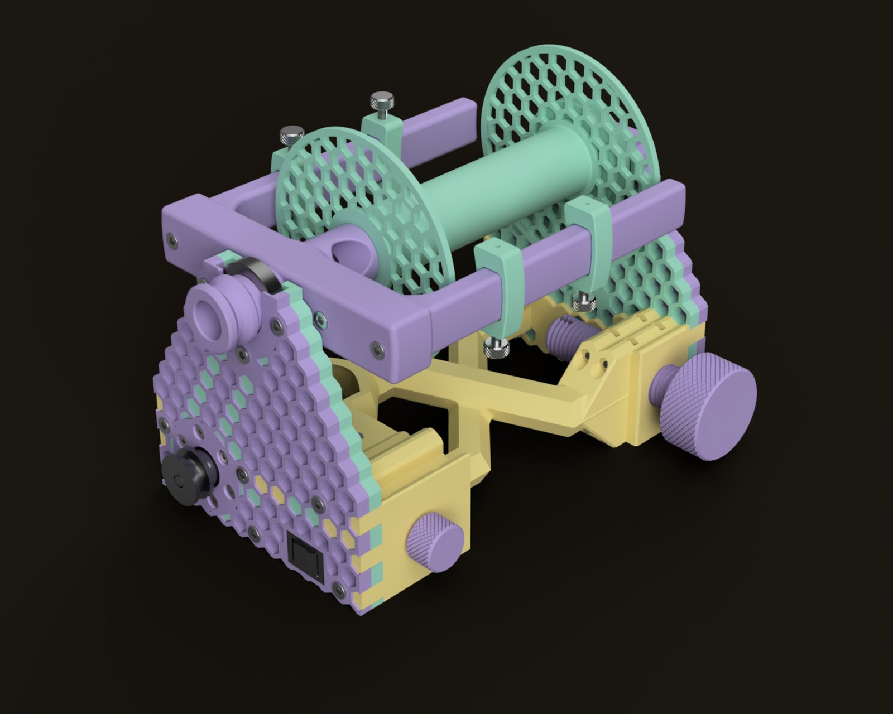
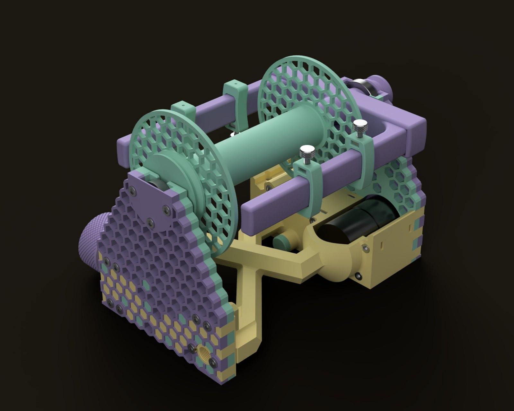
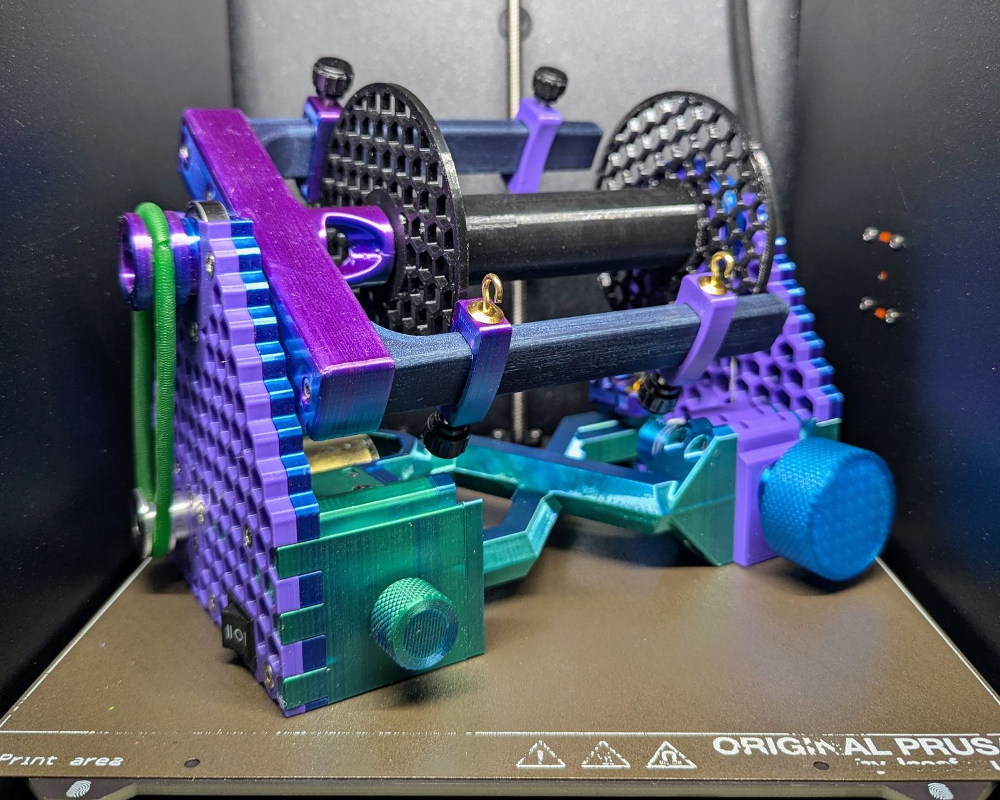
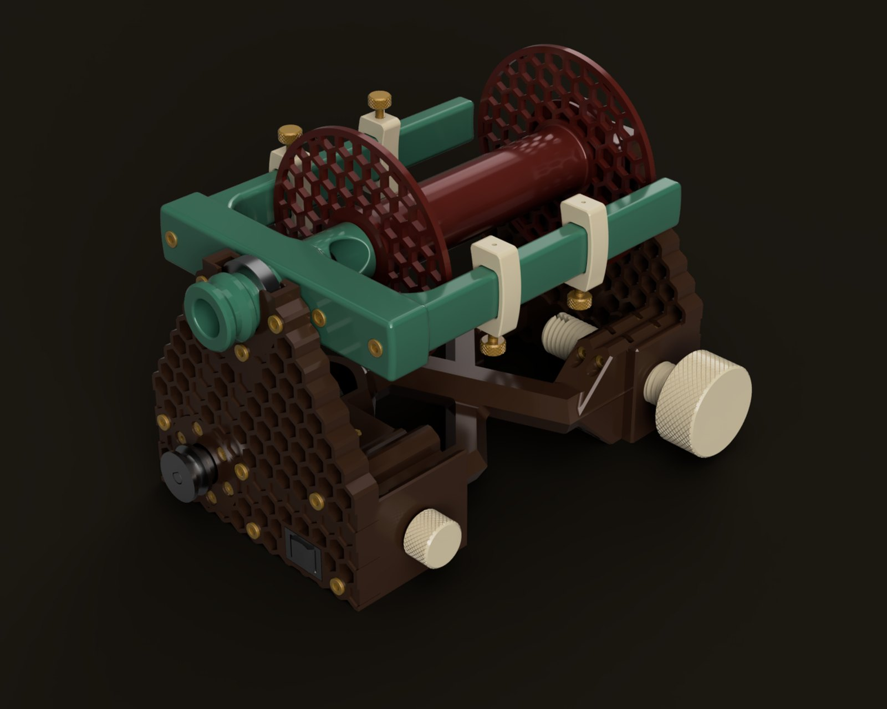
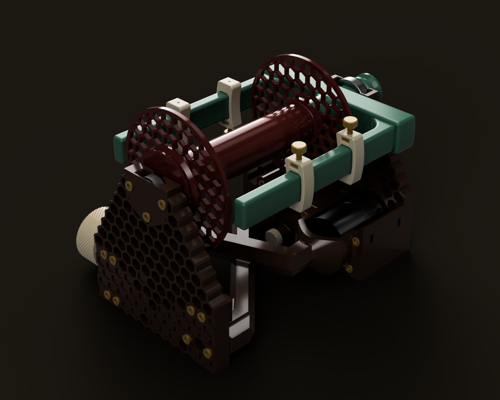
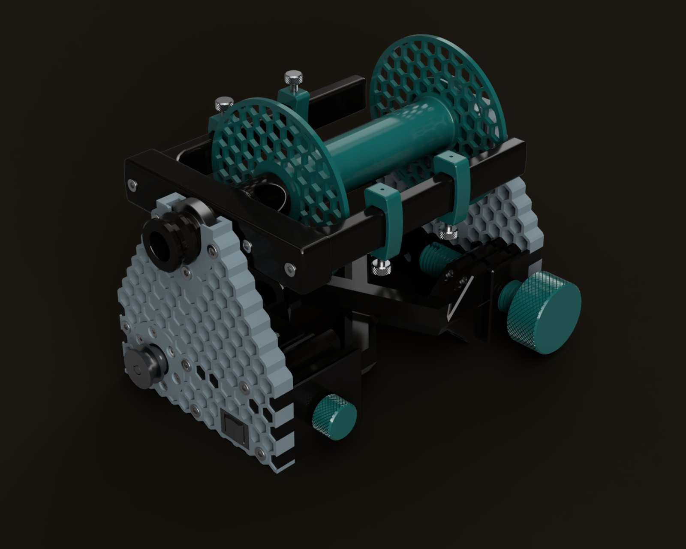
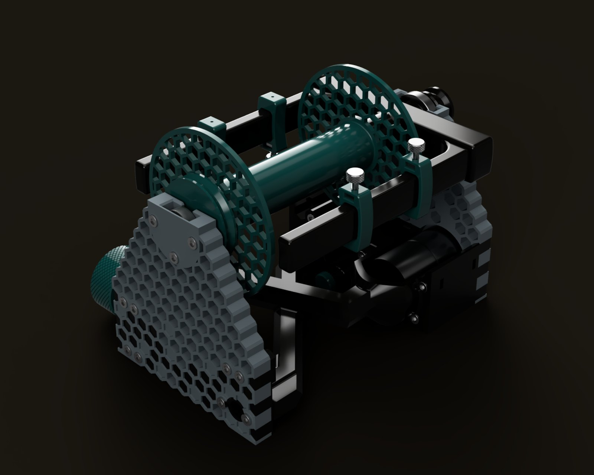
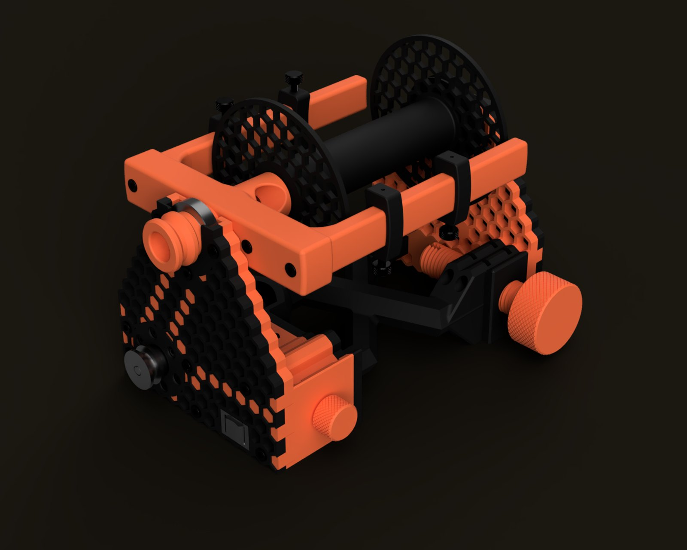
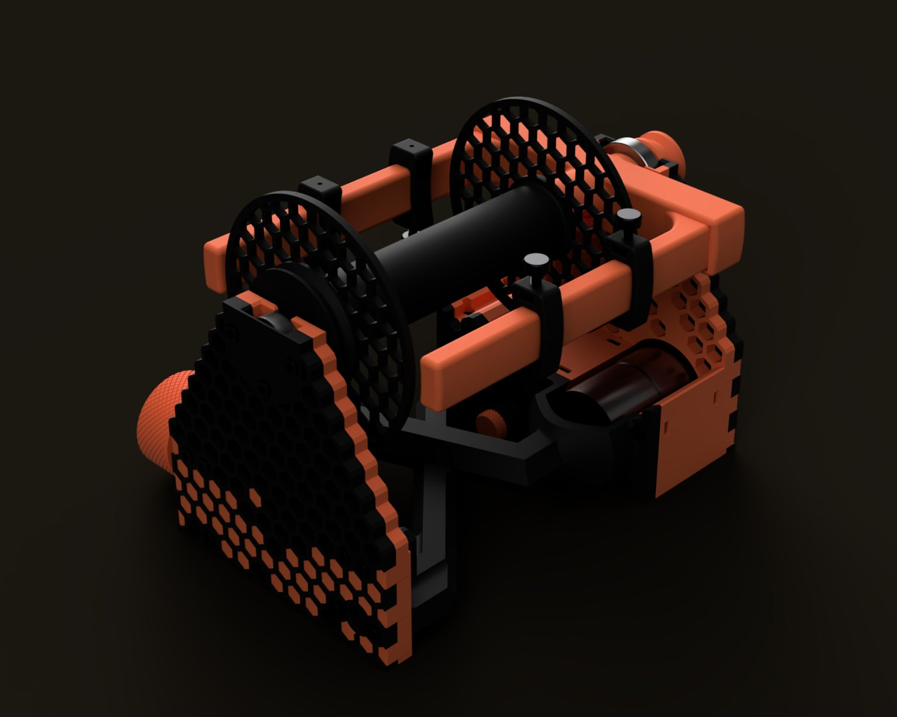

Arachne eSpinner
Released Dec 2025An electric spinning wheel built around a 12 V gearmotor and a $5 reversible speed controller, with a 3D-printed frame that prints without supports and most of it fine in PLA. There’s no firmware, and the soldering is optional. Parts run about $60 a wheel if you split packs with a friend, or about $143 if you buy the whole list yourself.



Renders of the model in the lavender colors (more colors below), and a finished Arachne v2.
Specs
- Flyer speed
About 400–500 RPM - Bobbin capacity
About 12–16 oz (estimated), same bobbin as Clotho - Orifice
15 mm, more on the way - Flyer
Bearing supported front and rear, optional printed rear saddle - Speed control
Knob on the controller, with a front-mounted [Z / Off / S] switch - Noise
Fixed by renaming the speed control knob 'Volume' - Size
About 164 mm wide, 223 mm long and 160 mm tall (6.4 × 8.8 × 6.3 in) - Weight
About 0.9 kg (2 lb) - Motor
JGB37-520 brushed DC gearmotor, 12 V, 600 RPM no load - Controller
1203BB PWM speed controller, 6–28 V, 3 A
Build notes
- Most of the parts work fine in PLA, but print the flyer arms in PLA+ or PETG. They take a fair amount of stress and flex, and PLA (especially silk PLA) can crack when you press the square nuts in.
- The brake screw’s printed threads wear smooth and stop holding tension pretty quickly. The brake screw retainer has a slot in the threads for a 25 mm piece of the drive belt to maintain tension.
- There are three press-in rear saddles (0.10, 0.20 and 0.30 mm clearance) that can replace the rear 608. They’re still being tested, so the 608 is the standard build; if you want to try one, start with the 0.10.
- The bobbin is the same one Clotho uses, so bobbins work on either wheel.
Color ideas
Arachne is a lot of separate parts, so it doesn’t have to be one color. In case you can’t decide, here are a few ideas. The frame is the risers, spreader, rear fascia, electronics housing and brake retainers, the flyer is the body, arms and orifice, and the accents are the knobs, hooks and jack plug. Each riser is two halves, so the inner halves (the ones that face each other) can be a different color from the outer ones, and it shows through the hexes.
Lavender. Lavender outer riser halves with mint inner halves, butter for the rest of the frame, lavender flyer and knobs, and mint for the bobbin, hooks and jack plug, with stainless hardware.


Radio. Dark brown frame, jade flyer, oxblood bobbin, ivory knobs, hooks and jack plug, brass hardware.


Test bench. Gray risers, black for the spreader, rear fascia, electronics housing, brake retainers and flyer, and teal for the bobbin, knobs, hooks and jack plug, with stainless hardware.


Prusa. Black frame with Prusa orange inner riser halves, rear fascia and electronics housing, an orange flyer, knobs and jack plug, a black bobbin and hooks, and black hardware.
Files
Everything you need to build one: the parts list with sources, the full STEP model, the printable 3MF assemblies, and build instructions. It’s all CC BY-SA.
Get the files on Printables → Parts list and build guide